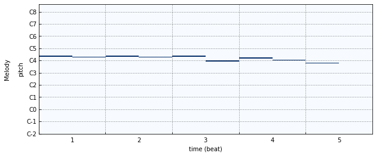

Visualization
MusPy supports two visualization tools. Both use Matplotlib as the backend for flexibility.
Piano-roll Visualization
The piano-roll visualization is made possible with the Pypianoroll library.
{kind=link}
- muspy.show_pianoroll(music, **kwargs)[source]
Show pianoroll visualization.
Score Visualization
The score visualization is made possible with the Bravura font.

- muspy.show_score(music, figsize=None, clef='treble', clef_octave=0, note_spacing=None, font_path=None, font_scale=None)[source]
Show score visualization.
- Parameters
music (
muspy.Music) – Music object to show.figsize ((float, float), optional) – Width and height in inches. Defaults to Matplotlib configuration.
clef ({'treble', 'alto', 'bass'}, default: 'treble') – Clef type.
clef_octave (int, default: 0) – Clef octave.
note_spacing (int, default: 4) – Spacing of notes.
font_path (str or Path, optional) – Path to the music font. Defaults to the path to the downloaded Bravura font.
font_scale (float, default: 140) – Font scaling factor for finetuning. The default value of 140 is optimized for the default Bravura font.
- Returns
A ScorePlotter object that handles the score.
- Return type
- muspy.ScorePlotter(fig, ax, resolution, note_spacing=None, font_path=None, font_scale=None)[source]
A plotter that handles the score visualization.
- muspy.fig
Figure object to plot the score on.
- muspy.axes
Axes object to plot the score on.
- Type
- muspy.resolution
Time steps per quarter note.
- Type
- muspy.note_spacing
Spacing of notes.
- Type
int, default: 4
- muspy.font_path
Path to the music font. Defaults to the path to the downloaded Bravura font.
- Type
str or Path, optional
- muspy.font_scale
Font scaling factor for finetuning. The default value of 140 is optimized for the default Bravura font.
- Type
float, default: 140